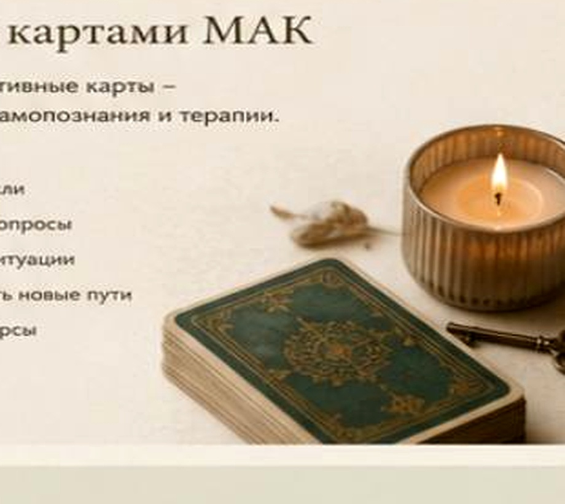

Робота з картами МАК
М’який спосіб досліджувати емоції, побачити ситуацію по-новому та знайти власні відповіді без тиску й поспіху.
Що таке метафоричні карти
МАК — це набір зображень, які допомагають говорити про складне через асоціації та метафори. Карта не дає готового «прогнозу» і не визначає, що ви маєте відчути. Важливим є той сенс, який ви самі бачите в обраному образі.
Карта не відповідає замість вас — вона допомагає почути вашу власну відповідь.
Як проходить зустріч
Формулюємо запит
Обговорюємо, що саме турбує зараз і який результат був би для вас корисним.
Обираємо карти
Ви обираєте зображення відкрито або навмання — залежно від задачі та вашого комфорту.
Досліджуємо асоціації
Через запитання й уважний діалог відкриваються почуття, сенси, обмеження та ресурси.
Знаходимо опору
Наприкінці зустрічі формуємо висновки та маленький реальний крок, який можна зробити далі.
Дистанційний формат
Онлайн-зустрічі дають змогу працювати з МАК у звичному й комфортному для вас просторі — без витрат часу на дорогу та незалежно від вашого місцезнаходження.
Під час зустрічі ви бачите карти на екрані, спокійно обираєте образи, які відгукуються, і ми разом досліджуємо ваші асоціації, почуття та можливі рішення.
З якими запитами можна працювати
- стосунки з собою та іншими людьми;
- тривога перед змінами;
- пошук ресурсу та мотивації;
- емоційна втома;
- складний вибір;
- самооцінка та особисті межі.
